Для перехода щелкните по ссылке на желтом фоне:
Вилка нагрузочная универсальная НМ-300
НАЗНАЧЕНИЕ
Примечание: Здесь и далее по тексту под аккумулятором понимается одиночная
свинцово-кислотная аккумуляторная ячейка (банка) номинальным напряжением 2,0 В - для кислотных свинцовых аккумуляторов, и напряжением 1,2 В - для щелочных.
Нагрузочная вилка, модель НМ-300,предназначена для проверки технического состояния:
1. В стандартной комплектации - кислотных стартерных аккумуляторов с открытыми перемычками, емкостью от 40 до 200 Ач
(аналогично нагрузочной вилке Э-108).
2. В исполненинии "Л" дополнительно:
- щелочных тяговых аккумуляторов, емкостью 180 Ач , 200 Ач, 250 Ач, 300 Ач, током 5-часового режима
разряда, при напряжении 1,2 В;
- кислотных тяговых аккумуляторов, емкостью 300 Ач, 350 Ач, 400 Ач, 500 Ач
током 5-часового режима разряда, при напряжении 2,0 В.
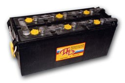
Вилка нагрузочная НМ-300 не предназначена для проверки стартерных батарей с закрытыми перемычками:
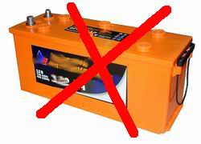
Условия эксплуатации вилки нагрузочной НМ-300:
Температура от минус -50 до плюс 60 °С, относительная влажность 95 % при температуре плюс 35 °С.
С помощью нагрузочной вилки НМ-300 можно измерить:
- напряжение аккумулятора без нагрузки (э.д.с. аккумулятора);
- напряжение аккумулятора под нагрузкой. При этом имеется возможность ступенчатого выбора пользователем величины тока нагрузки в зависимости от требований,
предъявляемых к аккумулятору.
Нагрузочная вилка, модель НМ-300, при тестировании аккумуляторов обеспечивает ступенчато-регулируемый ток разряда.
В стандартной комплектации поставляются сменные нагрузочные сопротивления:
- сопротивление маркированное «40-100 Ач» - (0,0120±15%) Ом - для проверки кислотных стартерных аккумуляторов
емкостью 40...100 Ач, током близким к стартерному;
- сопротивление маркированное «100-145 Ач» - (0,0055±15%) Ом; для проверки кислотных стартерных аккумуляторов
емкостью 100...145 Ач, током близким к стартерному;
- сопротивление маркированное «145-200 Ач» (0,0040±15%) Ом - для проверки кислотных стартерных аккумуляторов
емкостью 145...200 Ач, током близким к стартерному;
В исполнении"Л" (при заказе - НМ-300Л) вилка комплектуется дополнительными сопротивлениями:
1. маркированным "0,020 Ом" - обеспечивает сопротивление вилки (0,020±0,002) Ом - для проверки:
а) - тяговых щелочных аккумуляторов емкостью 300 Ач током, 5-часового режима разряда;
б - тяговых кислотных аккумуляторов емкостью 500 Ач током 5-часового режима разряда.
2. маркированным "0,025 Ом" - обеспечивает сопротивление вилки (0,022±0,002) Ом - для проверки:
а) - тяговых щелочных аккумуляторов емкостью 250 Ач током 5-часового режима разряда;
б) - тяговых кислотных аккумуляторов емкостью 400 Ач током 5-часового режима разряда.
3. маркированным "0,030 Ом" -обеспечивает сопротивление вилки (0,030±0,002) Ом - для проверки:
а) тяговых щелочных аккумуляторов емкостью 200 Ач током 5-часового режима разряда;
б) тяговых кислотных аккумуляторов емкостью 350 Ач током 5-часового режима разряда.
4. маркированным "0,033 Ом - обеспечивает сопротивление вилки (0,033±0,002) Ом - для проверки:
а) тяговых щелочных аккумуляторов емкостью 180 Ач током 5-часового режима разряда;
б) тяговых кислотных аккумуляторов емкостью 300 Ач током 5-часового режима разряда.
Нагрузочная вилка НМ-300 обеспечивает:
1. Возможность замера напряжения испытуемого аккумулятора без нагрузки (только при снятом нагрузочном сопротивлении);
2. Замер напряжения аккумулятора под нагрузкой;
3. Возможность настройки вилки на размер между осями выводов аккумулятора;
4. Поворотный вольтметр дает возможность работы с вилкой в труднодоступных местах.
ТЕХНИЧЕСКИЕ ХАРАКТЕРИСТИКИ ВИЛКИ НМ-300
1. Тип - переносной.
2. Номинальное напряжение проверяемого аккумулятора: кислотного - 2,0 В, щелочного - 1,2 В .
3. Стандартная комплектация:
- сопротивление маркированное «40-100 Ач» - (0,0120±15%) Ом - 1шт;
- сопротивление маркированное «100-145 Ач» - (0,0055±15%) Ом - 1шт;
- сопротивление маркированное «145-200 Ач» (0,0040±15%) Ом - 1шт.
Комплектация для исполнения "Л" - дополнительно нагрузочные сопротивления:
- сменное сопротивление маркированное «0,020 Ом» - 1шт;
- сменное сопротивление маркированное «0,025 Ом» - 1шт;
- сменное сопротивление маркированное «0,030 Ом» – 1 шт;
- сменное сопротивление маркированное «0,033 Ом» – 1 шт.
4. Измерительные приборы:
- вольтметр с пределами измерений 3-0-3 В, класса точности 1,5;
5. Угол поворота блока вольтметра:
- вокруг горизонтальной оси совпадающей с осью ручки на угол ±90 градусов;
- вокруг горизонтальной оси,перпендикулярной оси ручки - на угол не менее 60 градусов.
6. Угол поворота вольтметра в обойме - 360 градусов.
7. Основные размеры вилки в рабочем положении (вольтметр расположен горизонтально):
- высота вилки -133 мм;
- длина от конца ручки до края блока вольтметра - 197 мм;
- ширина вилки - 136 мм;
- расстояние между осями ножек 110 мм (регулируется);
8. Ориентировочная масса вилки 0,460 кг.
Скачать Руководство по эксплуатации НМ-300
Скачать Руководство по эксплуатации НМ-300Л
Скачать Руководство по эксплуатации НМ-300Э
МЕТРОЛОГИЧЕСКОЕ ОБЕСПЕЧЕНИЕ
Измерительный прибор нагрузочной вилки НМ-300 (НМ-300Л) - вольтметр М42301. Внесен в реестры
средств измерений России, Беларуси и Казахстана.<
Сертификаты и Свидетельства об утверждении средств измерений можно посмотреть здесь: Смотреть Сертификат.
Нагрузочная вилка не является средством измерений - это испытательное оборудование. Обязательной сертификации в РФ не подлежит - имеется
отказное письмо ВНИИСа № 101-КС/235 от 31.03.2021г.
Все нагрузочные вилки "ИнтерБалт" поставляются с первичной метрологической аттестацией Производителем, согласно ГОСТ Р 8.568-2017
"Государственная система обеспечения единства измерений. Аттестация испытательного оборудования. Основные положения".
УСТРОЙСТВО ВИЛКИ НМ-300
1. Нагрузочная вилка НМ-300, общий вид:
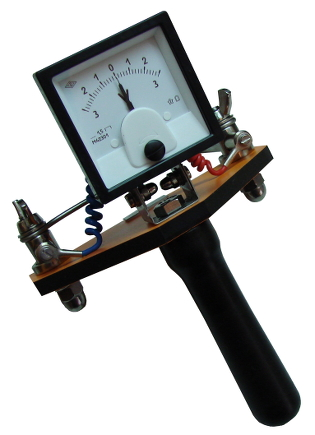
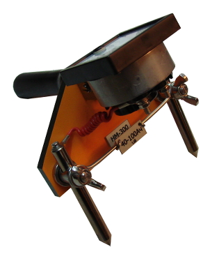
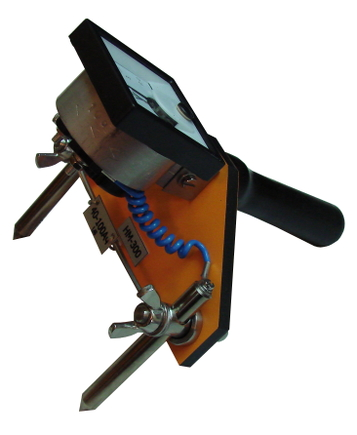
| Сопротивления базовой комплектации | Дополнительные сопротивления (для исполнения "Л") |
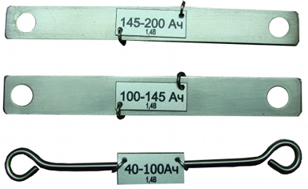 |
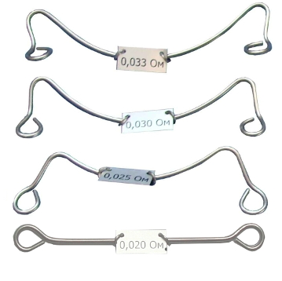 |
2. Измерительные ножки нагрузочной вилки могут поворачиваться - для установки на размер между выводами аккумулятора.
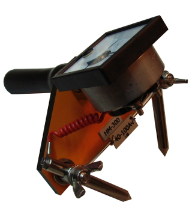
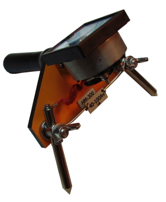
3. Вольтметр может поворачиваться в обойме крепления на 360 градусов. Блок вольтметра может поворачиваться относительно горизонтальной оси совпадающей с продольной осью ручки оси на ±90 градусов – для обеспечения удобства работы в труднодоступных местах. Также блок вольтметра может поворачиваться вокруг горизонтальной оси, перпендикулярной оси ручки, на угол до 60 градусов.
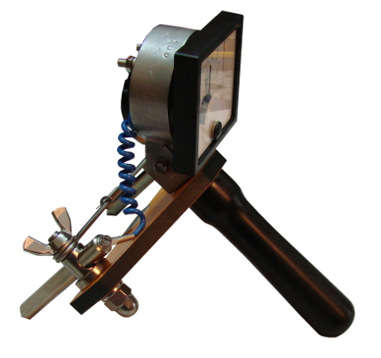
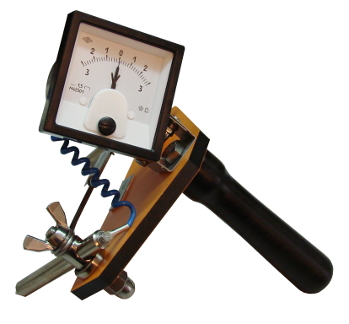
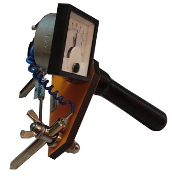
4. Ручка служит для удержания вилки во время работы.
5. Сменное нагрузочное сопротивление крепится к фиксаторам ножек двумя гайками М8.
6. Опция № 1. Поставляется за отдельную плату см. Цены. Дает возможность установить ручку вертикально для удобства работы в ограниченном пространстве, особено где имеет место ограничение по высоте (в подвагонном аккумуляторном ящике и т. п.).
7. Вилка нагрузочная НМ-300 с ручкой установленной вертикально (использование Опции №1):
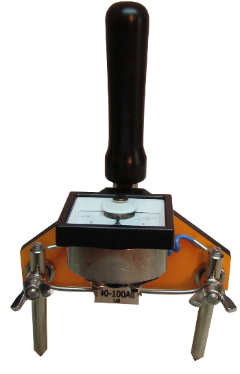

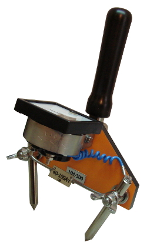
ВИДЕОРОЛИК ПО РАБОТЕ С ВИЛКОЙ НМ-300
class="style3">Возможны два варианта работы с нагрузочной вилкой НМ-300:
1. Нормальный режим проверки - проверка аккумулятора с замером напряжения без нагрузки и с замером напряжения под нагрузкой.
При такой проверке с нагрузочной вилки снимается нагрузочное сопротивление и производится замер напряжения аккумулятора без нагрузки (э.д.с. аккумулятора). После чего в нагрузочную вилку устанавливается сменное сопротивление, соответствующее типу и емкости испытуемого аккумулятора, и производится замер напряжения аккумулятора под нагрузкой в течение 5 секунд. Сравнивая эти два полученных напряжения, определяют техническое состояние аккумулятора.
2. Ускоренный режим проверки - проверка аккумулятора с замером напряжения только под нагрузкой
При такой проверке в нагрузочную вилку устанавливается сменное сопротивление, соответствующее типу и емкости испытуемого аккумулятора, измерительные ножки нагрузочной вилки приводятся в контакт с выводами аккумулятора и в течение 5 секунд производится замер напряжения под нагрузкой.
Напряжение аккумулятора под нагрузкой в течение 5 секунд должно быть:
- Для кислотных стартерных аккумуляторов - не ниже 1,4 В, при этом разность напряжений между отдельными банками не должна превышать 0,2 В;
- Для тяговых кислотных аккумуляторов - не ниже 1,75...1,8 В (только при проверке сопротивлениями комплектации "Л");
- Для тяговых щелочных аккумуляторов - не ниже 1,0 В (только при проверке сопротивлениями комплектации "Л").
Если напряжение аккумулятора под нагрузкой ниже указанных, то аккумулятор либо разряжен, либо неисправен.
Ваши замечания, предложения и пожелания по конструкции или эксплуатации вилки Вы можете отправить на электронную почту interbalt39@gmail.com.
Для перехода щелкните по ссылке на желтом фоне: